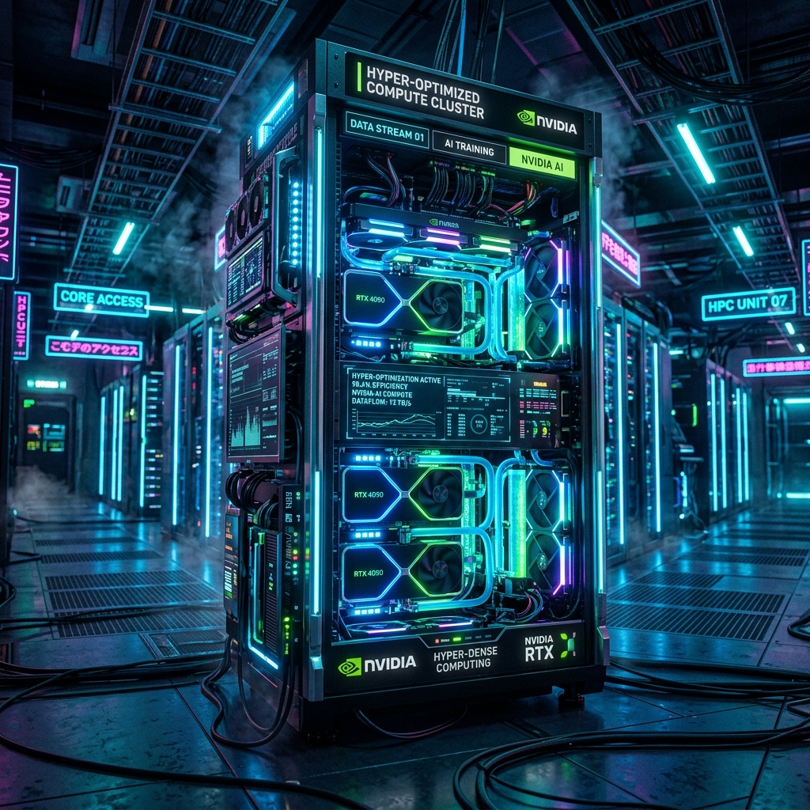

Massive Environment Overhaul: Brain-RTX Hyper-Optimization & Benchmark Results

I just completely overhauled my AI development infrastructure, migrating to a VS Code and Cline autonomous agent workflow powered by my local rig. To make it work, I had to heavily modify the GPU daemon to handle massive 12k+ token agentic context windows without choking.
The Rig (Brain-RTX)
- Hardware: NVIDIA RTX 2000 Ada Generation
- VRAM: 16 GB
- Engine: Ollama and
llama.cpp(v0.30.8) running via Proxmox VM
The Hyper-Optimizations (How I Did It)
By default, heavy context windows caused my 16GB card to spill into system CPU RAM, dropping generation speeds to a crawl (~2-4 TPS). I injected the following system-level parameters directly into the daemon:
- Flash Attention (
OLLAMA_FLASH_ATTENTION=1): Drastically slashed the Time-To-First-Token (TTFT) during massive context ingestion. - Q8 KV Caching (
OLLAMA_KV_CACHE_TYPE=q8_0): Quantized the context memory footprint by 50%. This was the magic bullet that kept large models entirely inside VRAM. - 24-Hour Keep-Alives (
OLLAMA_KEEP_ALIVE=24h): Locks models "hot" in the GPU during coding sessions to eliminate cold-starts.
The Results (Hot-Load Benchmarks)
With the optimizations applied, I saw a staggering 3x to 15x speed multiplier across the board. Here are the highlights from the gauntlet (tested on 1 Code Prompt and 3 heavy Security Prompts):
Ultra-Fast / Agentic (3B to 4B)
hermes-3-llama-3.2-3b:128k➡️ 91.48 TPS (0.02s TTFT)gemma-4-e2b-abliterated:128k➡️ 79.21 TPS (0.08s TTFT)
Mid-Weight / Coding (7B to 9B)
gemma2:9b➡️ 35.80 TPS (0.10s TTFT)ornith:9b➡️ 32.88 TPS (0.15s TTFT)dolphin-3-8b:latest➡️ 29.38 TPS (0.04s TTFT)
Heavyweight / Limits (14B to 22B)
qwen2.5-coder:14b➡️ 17.97 TPS (0.42s TTFT)deepseek-coder-v2:16b➡️ 16.89 TPS (0.56s TTFT)codestral:22b➡️ 4.73 TPS (Failed/Spilled to RAM)
Key Takeaway
For autonomous agentic workflows on a 16GB RTX 2000 Ada, 16-Billion parameters is my absolute physical ceiling. Anything larger (like the 22B Codestral), even heavily quantized with Q8 caching, will overflow the VRAM once context gets deep and crash my speeds.